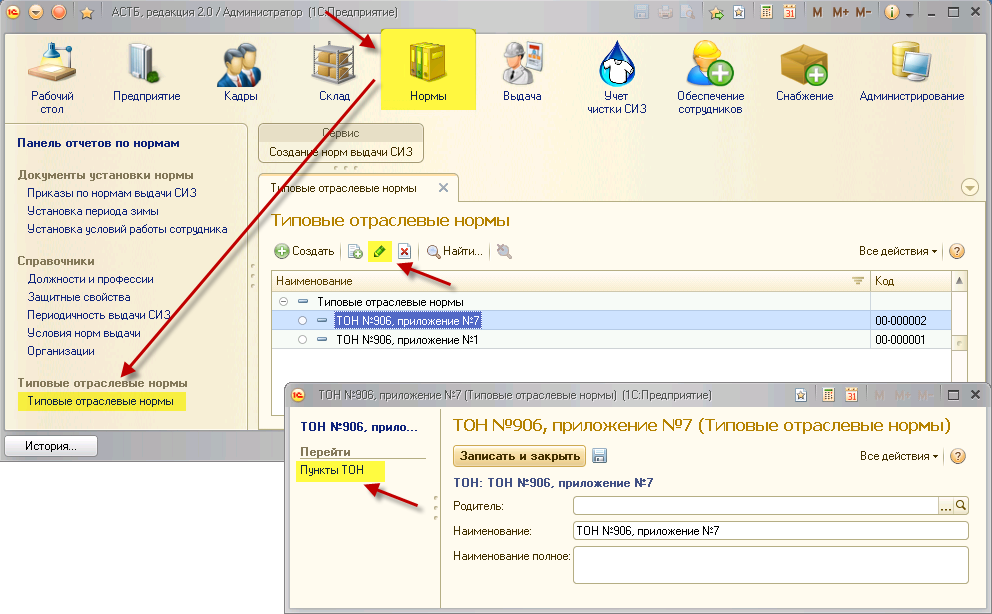

Типовые отраслевые нормы выдачи специальной одежды, специальной обуви и других средств индивидуальной защиты (в дальнейшем - ТОН) предусматривают обеспечение работников средствами индивидуальной защиты (в дальнейшем - СИЗ). Установка норм осуществляется ТБ в зависимости от экономической отрасли производства, цеха, участка и вида работ.
Чтобы перейти к справочнику, зайдите в раздел «Нормы». В открывшемся окне будет представлен список ТОН и номеров приложений. Чтобы просмотреть пункты ТОН, нажмите кнопку «Редактировать», а затем перейдите в справочник «Пункты ТОН».
Примечание: состав ТОН находится в справочнике «Нормы выдачи СИЗ»